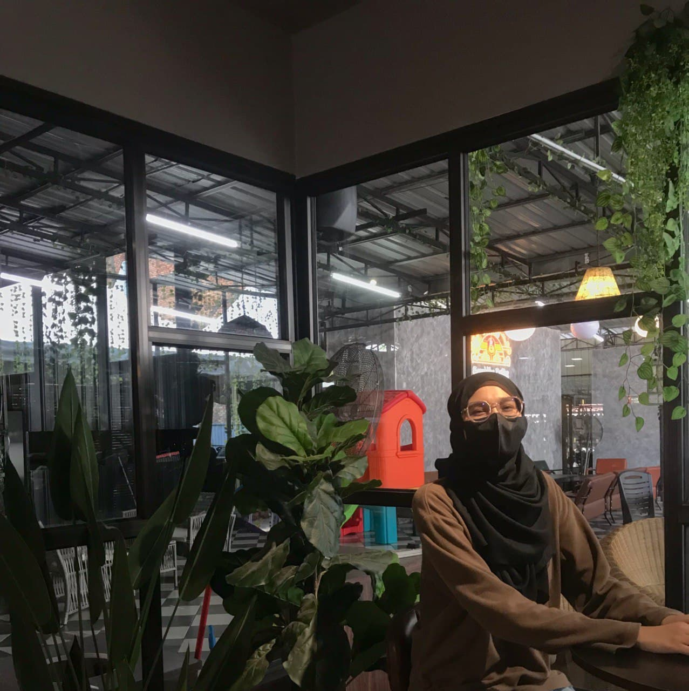

Based on my own experience, before I entered the university to continue my studies in the Diploma in Information Management course in the Faculty of Information Management, I did not know any direct knowledge about this course, for example, what is information? What is the importance of information? Why preserve information important? What should we do when we no longer need that information? What are the basic components of a laptop that I need to know? What are reference materials? How to find information and materials in the library easily? How many types of reference services are there? In the first semester of my first year of studying for this information management diploma, I have learned many things in it that I have never learned. Indeed, I became more observant and moved faster not the same as when studying in high school because my parents and teachers once advised that the way of learning in a university within the high school is not the same because we go on to a higher level. Thus, we will be more responsible and will not waste time on frivolous things.
As I study online distance learning, I discover many different things when we learn face to face with our lecturers in class. For example, when online distance learning, I will use social media such as WhatsApp, Telegram for my classes. In addition, my lecturers often use Google Meet for the class. I personally think using Google Meet for the class is great and amazing because I can focus and understand easily when using ‘Google Meet’ than using ‘WhatsApp’. Moreover, it feels like face-to-face with my lecturers as the real class because it was two-way communication where the lecturers ask if their students understand or not the topic that was discussed earlier. In addition, the student also can ask any questions regarding the assignment, group project, or questions about the topic that being discussed at the end of the class. Throughout my study of this diploma, I learned a lot of new things, instead of focusing on just one subject, but many things that I got and practiced. This semester, I have been looking forward to class time because all the subjects this semester are quite interesting and exciting.